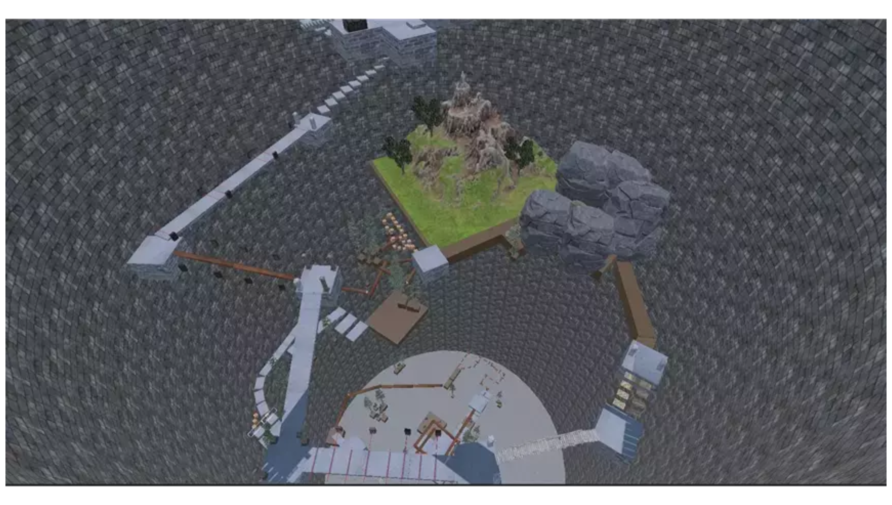
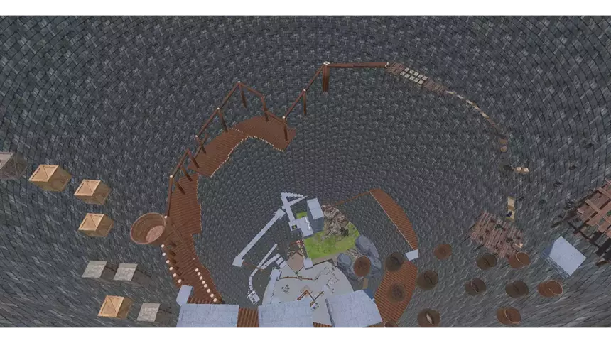

3D 온리업류 플랫포머 · 5인 팀 · 기획과 클라이언트 프로그래밍 · 2025.03 ~ 2025.06


| 장르 | 온리업류 (3D 플랫포머) |
|---|---|
| 주요역할 및 담당 | 1. 전체 레벨 구상·배치, 특정 퍼즐 설계 2. 플레이어(상태머신·애니메이션), UI, 장애물/퍼즐 시스템 개발 |
| 개발 인원 | 총원 5명 |
| 기간 | 2025.03 ~ 2025.06 (약 4개월) |
| 개발 환경 | Unity 2022.03.58f1, C# |
| 링크 | GitHub · STOVE |
3D 플랫포머의 플레이어를 상태 패턴(FSM)과 애니메이터로 구현하고, 모션·물리·입력이 서로 부딪히는 문제를 상태 전환 규칙으로 정리했습니다.
저장소에 커밋 81개를 작성했고, 플레이어 상태머신·애니메이션부터 함정 구조, 카메라, 사운드, UI, 스토리·엔딩, 데이터 변환까지 클라이언트 전반을 맡았습니다.
| 내가 구현한 것 |
|---|
|
플레이어 상태머신(FSM)·애니메이터·벽타기 뾰족덫 계열 상속 구조 카메라(벽 통과 방지, 낙하 흔들림) 사운드 시스템, 설정 UI, 일시정지 스토리(나레이션·자막)·엔딩·밤/낮 시스템 JSON → ScriptableObject 변환 전체 레벨 구상·배치, 특정 퍼즐 설계·구현 에셋 적용 |
구조
플레이어를 Move, Jumping, Falling, Landing, SupperLanding, Climbing 6개 상태로 나눈 상태 패턴(FSM)으로 구현했습니다. 상태가 바뀔 때마다 PlayerAnimationController가 이전 상태 → 다음 상태 조합에 따라 애니메이터 파라미터(IsJumping, IsLanding, IsFalling, IsClimbing, IsSupperLanding)와 CrossFade 시간을 정합니다. 모션은 Mixamo의 Y Bot 모션 FBX를 가져와 Animator Controller로 연결했습니다.
| 어려움 | 원인과 해결 |
|---|---|
| 애니메이션 때문에 동작이 막힘 | 점프 애니메이션 오류, 회전 애니메이션 중 점프가 안 되는 문제가 있었습니다. 상태 패턴으로 바꿔 상태별로 이동 제한을 분리했고, 상태 전환 방식도 한 번 더 바꿨습니다. |
| 모션 전환이 끊기고 튐 | 상태 조합마다 전환 시간을 다르게 했습니다. 즉시 전환은 0.01초, 부드러운 전환은 0.1~0.2초입니다. 파쿠르·착지 때 끊기던 문제를 해결했습니다. |
| 벽타기 모션과 위치가 안 맞음 | 벽 오브젝트마다 크기 비율이 달라 같은 모션이 맞지 않았습니다. 모션 싱크를 조정하고, 방향 회전·이동을 선형보간으로 처리했으며, 점프 → 벽타기 때의 멈칫함·오브젝트 통과·흔들림을 수정했습니다. |
| 상태 전환 조건이 서로 충돌 | 일반 착지 오류, 회전 중 이동하면 상태가 꼬임, 특정 위치에서 벽타기가 안 됨을 수정했습니다. 밀쳐진 뒤에는 떨어지는 모션으로 전환하게 했습니다. 최종 빌드에서는 낙하 → 벽타기, 일반 착지 → 벽타기 전환을 추가하고 땅·벽 체크 방식을 바꿨습니다. |
| 이동 방식이 서로 충돌 | 함정 충돌이 안 되던 문제를 DOTween 이동에서 물리 기반 이동으로 바꿔 해결했습니다. 경사 이동과 발판 모서리 감속도 수정했습니다. |
배운 점
전환 조건(거리값 25f, 2.2f, 12 등)이 CheckTransitions() 한 곳의 switch에 몰려 있어서, 조건이 늘수록 서로 충돌했습니다. 상태별로 전환 조건을 각 State 안으로 나누거나 전환 표로 관리했다면 수정이 더 쉬웠을 것입니다.
public void UpdateAnimationState(PlayerState currentState, PlayerState newState)
{
if (newState == null) return;
ClearAllParameter(); // IsFalling 초기화
switch (newState)
{
case MoveState:
animator.SetBool(PARAM_IS_LANDING, false);
break;
case JumpingState:
if (currentState is LandingState || currentState is MoveState) ChangeAnimation("Jumping");
break;
case FallingState:
if (currentState is MoveState) ChangeAnimation_Smooth("Falling", 0.2f);
else if (currentState is JumpingState) animator.SetBool(PARAM_IS_FALLING, true);
break;
case SupperLandingState:
if (currentState is FallingState) animator.SetTrigger(PARAM_IS_SUPPERLANDING);
break;
case ClimbingState:
if (currentState is MoveState) ChangeAnimation("Climbing");
else if (currentState is JumpingState) ChangeAnimation_Smooth("Climbing", 0.1f);
// ... (일부 생략)
break;
}
}
private void ChangeAnimation(string stateName) => animator.CrossFade(stateName, 0.01f, 0);
private void ChangeAnimation_Smooth(string stateName, float value) => animator.CrossFade(stateName, value, 0);case MoveState:
if (Input.GetKeyDown(KeyCode.Space) && pC.IsGrounded()) sM.TransitionToState(JumpingState.GetInstance()); // 점프
else if (mC.CheckClimbing()) sM.TransitionToState(ClimbingState.GetInstance()); // 벽타기
else if (pC.CheckDistance() > 25f && !pC.isFalling && !pC.IsGrounded() && pC.CheckFalling(12)) // 낙하 진입
sM.TransitionToState(FallingState.GetInstance());
else if (pC.isHightLanding) sM.TransitionToState(LandingState.GetInstance()); // 높은 곳 착지
else if (pC.isTrusted) sM.TransitionToState(FallingState.GetInstance()); // 밀쳐진 뒤 낙하
break;설계
Trap 기본 클래스를 설계하고 다양한 함정을 상속으로 구현했습니다. 공통 기능(데미지 처리, 충돌 감지, 재사용 로직)은 부모 클래스가 관리하고, 개별 함정은 override로 동작만 바꿉니다. 그래서 새 함정을 추가하는 비용이 작았습니다. 뾰족덫 0·1·2는 이 구조로 구현했고(4/15~16), 충돌이 안 되던 문제는 이동 방식을 물리 기반으로 바꿔 해결했습니다(4/23).
설계
Excel로 스토리 이벤트 데이터(음성, 자막)를 관리하는 테이블을 설계하고, Excel → JSON → ScriptableObject 순서로 변환해 Unity에서 자동으로 불러오게 했습니다(JsonToScriptableConverter, 4/30). 사운드도 데이터베이스(ScriptableObject) 기반으로 만들었습니다. 그 결과 특정 구간에 들어가면 데이터에 따라 음성과 자막이 동기화되어 재생됩니다.
온리업의 전체 레벨 구상과 오브젝트 배치를 전담했고, 특정 퍼즐은 직접 설계·구현했습니다. 주요 작업: 레벨디자인 오브젝트 배치·테스트(6/8), 장식품 콜라이더 설치·오류 수정(6/10), 스토리 배치와 선택 발판의 엘리베이터 기능